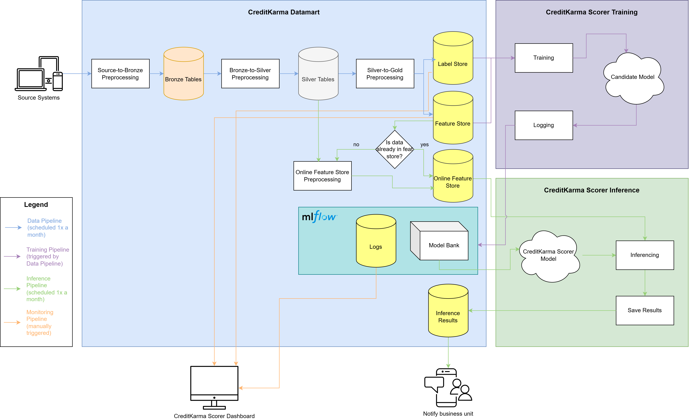
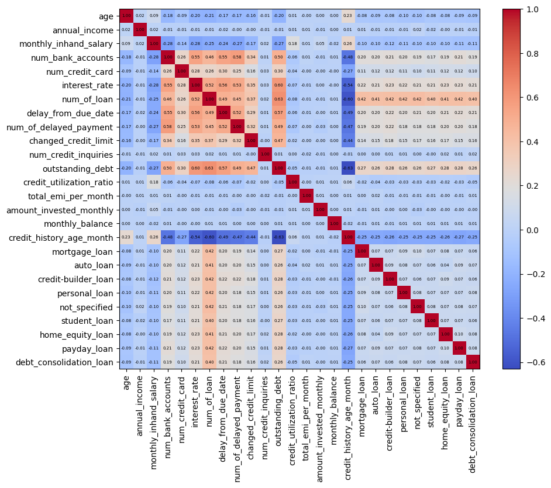
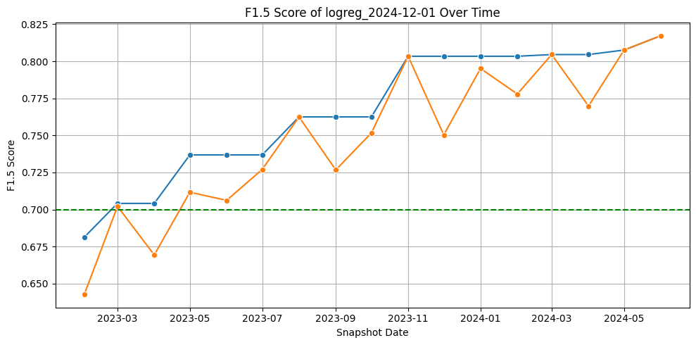

SMU MITB CS611 2024 Project
This project was developed as an individual effort to showcase my skills in data processing and end-to-end machine learning solution design. In this scenario, I assumed the role of a data scientist working within a financial institution seeking to enhance its loan decision-making process by leveraging historical data to minimize the risk of losses from high-risk customers. To address this objective, I designed and built the CreditKarma Suitea: unified ecosystem of tools that aggregates data from various internal systems to assess and analyze customer creditworthiness. The solution consists of two core components: CreditKarma Datamart, a centralized data repository aggregated from the organization's various systems that acts as a single source of truth for all applications; and CreditKarma Scorer, a binary classificatoin model developed to predict the probability of customer default.
CreditKarma Suite is connected through an end-to-end pipeline for data processing, model training, and model deployment. This pipeline is deployed using Docker and orchestrated using Airflow. It can be broken down into the following 4 separate functionalities:
CreditKarma Datamart aggregates data from the organization's various systems, cleans them, and processes them into a unified datamart for CreditKarma Scorer training and other analytics purposes. It is deployed as a DAG in Airflow that is triggered on the first day of each month.
CreditKarma Scorer Training trains two types of binary classification models (logistic regression and random forest classifier), performs automatic hyperparameter tuning, and saves them into a model registry deployed using mlflow. It is deployed as a DAG in Airflow that is automatically triggered after the data pipeline for that month has been completed.
CreditKarma Scorer Inference calls the selected model to perform batch inferencing on the current month's unlabeled data. Results are saved into the datamart and delivered to business stakeholders through their preferred mode of communication. It is deployed as a DAG in Airflow that is automatically triggered on the 7th day of each month, to give the data team some leeway time to look through the monitoring logs and decide the deployment model for that month.
CreditKarma Scorer Monitoring monitors changes in data distribution and model performance over time. It is incorporated into the training and inference pipelines through collecting logs and saving them into the datamart. These logs can then be pulled into a dashboard (which, for the proof of concept, is simply deployed using a Jupyter Notebook in a container). The purpose of the dashboard is for the data team to decide which model should be deployed for the month and to see if there is any major drifts in distribution (because of temporal seasonality) that might impact the model's performance. For now, in the early stages of CreditKarma Suite, deployment is done manually, but it can easily be automated using Airflow once the business and data team have aligned on metrics for automatic deployment.

CreditKarma Datamart is structured according to the
Medallion Architecture
to ensure consistency and help align on an interface for long-term
maintainability. The bronze tables store raw data pulled from source
systems without processing, silver tables store data that have been
cleaned and conformed, and gold tables store business-level
aggregates, which in our case is a feature store and label store for
training CreditKarma Scorer.
There are four source systems that data can be pulled from:
Loan Management System (LMS), which contains monthly records
of loans paid off and overdue amounts; Customer attributes,
which contains customer demographic records snapshotted on the day
they are registered into the LMS (i.e. when they take out their
first loan); Financials, which contains customer financial
records snapshotted on the day they are registered into the LMS; and
Clickstream, which contains records of customers' activity on
the application over time. Using this data, we can build a
customer profile at the time of making a loan application to
help us determine their credit-worthiness.
Source to Bronze: Data is pulled from the sources and partitioned by month of snapshot date, then saved into CSVs with no additional data preprocessing. The bronze table functions as a single source of truth to build new silver tables from, in case upstream sources changes or archives data. Partitons allow us to query data faster.
Bronze to Silver: Each table is saved as a
Parquet file with enforced schema data types and column names
standardized to lower case. This file format enhances the speed of
querying due to internal compression. Additionally, new columns are
created from string columns to standardize them. For example,
Credit_History_Age from financials table, which is in the form of
"xx Years and yy Months", is parsed into two new columns
"credit_history_age_year" (int) and "credit_history_age_month"
(int).
In addition, invalid values are removed. This is because imputation
would be done at a later stage. Values are considered invalid when
they are below 0 for variables that cannot be negative (e.g. age and
counts), and if they are absurdly large (e.g. age > 120). On the
other hand, improbable outliers (e.g. 800 credit cards) are clipped
to the 97th percentile (decided through EDA) so that they do not
skew the prediction.
Silver to Gold: From the silver tables, we aggregate them
into a label store (i.e. target variable) and
feature store (i.e. predictors). They are indexed by customer
ID and date of first loan.
The label store is decided using the LMS data. A "bad
customer" (i.e. default their payment) is everyone who has not paid
off their loans in the 10th installment. We want to find out how
much earlier we can start estimating that a customer will end up as
a bad customer by plotting the proportion of "bad customers" who
have overdue loans for each month on book. It turns out if a
customer is on their 6th month on book and
still has payments that are 30 days past due, it is unlikely
they will pay them off before the tenure. Hence, these customers are
marked as "default".
Meanwhile, the feature store consolidates all the features from the silver tables. After correlation analysis and PCA are considered, I decided not to drop any of the features as they seem to be distinct from each other. To handle clickstream data, which captures multiple snapshots for each customer, I took the mean of the clickstream features for every customer before their first month of book. This is done to prevent data leakage (using future data that we would not have at the point of inference).
CreditKarma Scorer is trained on the first day of each month starting from 2024. The training pipeline performs automatic hyperparameter validation for logistic regression and random forest classifier using grid search. Model artifacts, alongside its data preprocessing pipeline, are logged into a model registry hosted using mlflow. The model is trained on the past 12 months of data, where the first 9 months are split into train-validation-test sets with 0.8-0.1-0.1 ratio, while the last 3 months are denoted as "out of time" splits (OOT1, OOT2, OOT3 respectively). The purpose of "out of time" splits is to ensure the model's performance remains stable over time. The preprocessing pipeline (which includes mean imputation and standard scaling) are saved alongside the model artifacts.
Model deployment is also done via mlflow. CreditKarma maintainers must assign the "champion" alias to the best model. This allows for easy blue-green deployment, which is safe enough for the CreditKarma Scorer as its primary users are the internal business team who maintain active communication with the data team. This champion model is then used by the inference DAG in Airflow to make predictions for this month's batch of data, which is stored in an online feature store before being merged into the main (offline) feature store once their labels have been decided.
There are three aspects of monitoring that the CreditKarma Scorer Dashboard provides: data monitoring, model performance monitoring, and model stability monitoring.
Data monitoring serves to monitor the distribution of data over time to see if there are any changes that might influence how the model performs. This way, if the model suddenly performs badly at a period of time, we can easily pinpoint if it's a data problem or a training problem. To do this, we compute the PSI (population stabilty index) of features between months and display it as a heatmap. In addition, we can also plot the label distribution over months.
Model performance monitoring helps us select the best model
to deploy by monitoring the performance. F1.5 Score is chosen as the
primary validation metric because we want to slightly prioritize
recall over precision. Giving out loans to customers who default
will result in greater loss, but we don't want to be too
conservative.
For example, according to the current results, Random Forest
Classifier seems to overfit on the train data, with a steep drop in
performance in every set other than Test. Therefore, Logistic
Regression is chosen as the model of choice for CreditKarma Scorer.
Model stability monitoring monitors the stability of the deployed model version over time to alert for potentially having to deploy a new version. The blue line denotes the cumulative maximum to gauge if our model is underfitting, whereas the orange line denotes the current model's performance over time. Green dashed line denotes the business unit's requirement which we aligned on.
Although it is a simple project, I think this project helps me showcase my fundamentals on designing an end-to-end machine learning pipeline. In school projects, most of the time, we never think about longevity or long-term maintainability because the projects are not built to last longer after the term. However, this class allowed me to think of how to design and maintain a machine learning system for the long term.